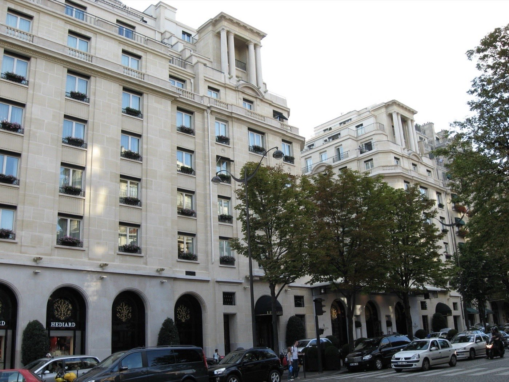
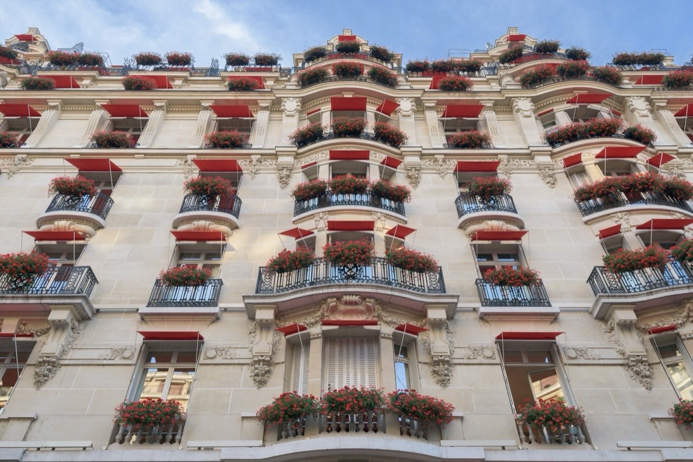
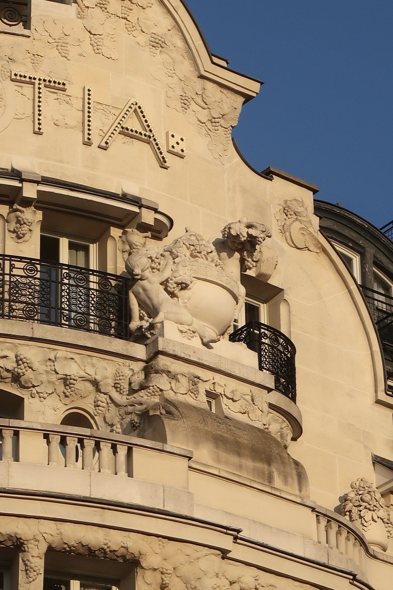
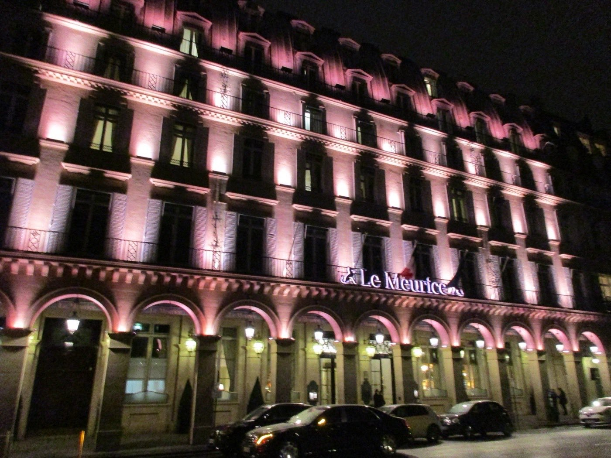

Hôtel de luxe avec spa à Paris : les 8 meilleures combinaisons
Un spa de palace, ça ne se résume pas à une piscine et deux bougies. Piscine de 30 mètres,
teck massif, soins Dior ou Valmont : les écarts sont immenses, et le prix de la chambre ne
prédit pas la qualité du spa. Nous avons noté le spa seul, et mesuré ce qu'il faut
vraiment débourser pour y entrer sans dormir sur place.
Par Swann Bertaud, rédacteur✺Publié le 21 juillet 2026✺18 min de lecture
Le Cheval Blanc Paris, quai du Louvre : sous la Samaritaine rénovée, le Dior Spa
et sa piscine de 30 mètres, la plus grande piscine d'hôtel d'Europe. Photo : site officiel.
TL;DR : l'essentielLe podium des spas de palace
Dior Spa Cheval Blanc, 9,5/10 :
piscine de 30 m (record d'Europe), six suites de soins, douche de neige, signé Peter Marino.
Le meilleur spa d'hôtel de Paris, sans discussion.
Spa My Blend by Clarins (Royal Monceau), 9,0/10 :
1 500 m² signés Starck, piscine de 23 m en marbre blanc. Et le seul vrai day spa
de palace parisien (journée à 210 €).
Spa Le Bristol by La Mer, 8,5/10 :
piscine en teck massif au 6e étage, vue Eiffel. Son hammam est n°1 de notre
classement des hammams parisiens.
Le vrai sujet : l'indice accessibilité LMHS
ne suit pas du tout le score spa. Le Cheval Blanc écrase la concurrence
(9,5) mais ferme sa piscine aux non-résidents (1,5/5).
Le Meurice, dernier au score (7,0), est l'un des plus ouverts
(3,5/5). Si vous ne dormez pas sur place, le classement à lire est celui de
la colonne de droite.
Deux notes, et pourquoi elles ne disent pas la même chose
Ce comparatif applique une variante spa du Protocole LMHS, avec deux données propriétaires distinctes :
Score LMHS Spa /10, note uniquement le spa : équipements, catalogue de soins, ambiance, rapport prix/expérience spa. Il est indépendant du score de l'hôtel. Un palace peut être exceptionnel et avoir un spa moyen, c'est exactement le cas du Meurice.
Indice accessibilité spa LMHS /5, mesure si le spa est réellement ouvert aux non-résidents : tarifs d'accès, périmètre réel (soins seuls ou installations comprises), horaires, facilité de réservation. Un score élevé signifie qu'on peut profiter du spa sans payer la chambre.
Ces deux notes sont produites par la rédaction et ne figurent dans aucun autre classement. Les scores spa repris de nos articles déjà publiés, Cheval Blanc, Bristol, George V, Crillon, Meurice, sont conservés à l'identique : voir notre avis complet sur le Cheval Blanc Paris, dont le comparatif des cinq grands palaces sert de socle à ce classement.
Le tableau : spas de palaces parisiens
Rang
Hôtel
Spa / marque
Surface
Piscine
Accès non-résidents
Score LMHS Spa
Indice accès
Chambre dès
01
Cheval Blanc Paris
Dior Spa
1 000 m²
30 m
Soin seul (détente 60 €)
9,5/10
1,5/5
~2 050 €
02
Le Royal Monceau
My Blend by Clarins
1 500 m²
23 m
Oui, journée 210 €
9,0/10
4/5
~950 €
03
Le Bristol Paris
Spa by La Mer
440 m²
Teck, 28 °C
Soins + hammam (dès 150 €)
8,5/10
3/5
~2 100 €
04
Four Seasons George V
Le Spa
720 m²
17 m
Soins seuls
8,5/10
2/5
~1 300 €
05
Plaza Athénée
Dior Spa
400 m²
Non
Oui, soins dès 150 €
8,3/10
3,5/5
~1 450 €
06
Lutetia (Mandarin Oriental)
Spa Akasha
700 m²
17 m
Sur demande
8,1/10
2/5
~1 080 €
07
Hôtel de Crillon
Sense, A Rosewood Spa
N.C.
Oui (résidents)
Soins sur réservation
8,0/10
2,5/5
~1 200 €
08
Le Meurice
Spa Valmont
~340 m²
Non
Oui, soins dès 160 €
7,0/10
3,5/5
~1 000 €
Chambre dès = prix d'entrée de gamme en basse saison (novembre-janvier), hors promotions,
même base que notre comparatif des grands palaces. À égalité de score spa, le classement départage
sur l'indice accessibilité : c'est ce qui place le Bristol devant le George V.
Tarifs et prestations relevés en juillet 2026 sur les sites officiels des établissements.
Notre sélection : les 8 meilleurs spas de palace
01
Dior Spa Cheval Blanc 9,5/10
Pour qui : les clients de l'hôtel qui veulent l'expérience spa la plus spectaculaire de Paris. Pas pour le day spa.
La référence absolue. Conçu par Peter Marino, au cœur de la Samaritaine rénovée. La piscine intérieure de 30 mètres, ornée de mosaïques artisanales signées Michael Mayer, est la plus grande piscine d'hôtel d'Europe, elle est entourée de 66 m² de miroirs et de 50 m² d'écrans LED. Hammam en marbre, sauna, douche de neige, et six suites de soins nommées selon les codes de la maison (Bonheur, New Look, Sauvage), chacune avec sa salle de bains privée en onyx blanc ; la suite Bonheur dispose de deux tables pour les soins en duo. Soin signature : le Rituel Dior La D.Vine (60 min, dès 290 €) ; soins visage et corps dès 150 €. Studio fitness ouvert 24h/24 pour les résidents. L'architecture est un spectacle en soi : la piscine face à la fresque d'Oyoram, la douche de neige après le hammam, une expérience sensorielle complète, pas juste un soin.
Le bémol LMHS : l'accès est ultra-restrictif. Résidents de l'hôtel ou membres du Club Cheval Blanc (75 places, tarif non communiqué). Les non-résidents peuvent réserver un soin avec accès à l'espace détente à 60 €, mais la piscine reste hors de portée. Pour un spa de cette envergure, c'est frustrant, et c'est ce qui lui vaut l'avant-dernier indice d'accessibilité du classement.
1er arr. · Dior · Surface 1 000 m² · Piscine 30 m · 10h-20h, 7j/7 ·
Chambre dès ~2 050 € · Indice accessibilité 1,5/5 ·
Site officiel →
02
Spa My Blend by Clarins : Le Royal Monceau 9,0/10
Pour qui : ceux qui veulent un vrai day spa de palace sans payer la chambre. Et les résidents qui cherchent la piscine la plus impressionnante après le Cheval Blanc.
1 500 m² signés Philippe Starck, avenue Hoche. La piscine en marbre blanc de 23 mètres, la deuxième de Paris derrière le Cheval Blanc, est baignée de lumière naturelle et bordée d'un mur miroir, eau à 29 °C. Sept cabines de soins, deux hammams, deux saunas, laconium, douches sensorielles, fontaine à glace, bain Watsu à 34 °C : c'est un spa complet dans tous les sens du terme. Soin My Blend Signature (1h30, accès spa inclus, 295 €), cryothérapie à 80 € les 15 minutes. Et surtout : accès journée à 210 €, gratuit avec un soin de plus de deux heures. C'est le seul palace parisien à proposer un forfait journée complet, installations comprises.
Le bémol LMHS : plusieurs avis signalent des vestiaires trop petits et des casiers minuscules pour un spa de 1 500 m². Et 210 € pour un accès sans soin reste élevé, même à ce niveau de prestation.
8e arr. · Clarins / My Blend · 1 500 m² · Piscine 23 m · Lun-sam 6h30-22h, dim 7h30-20h30 ·
Chambre dès ~950 € · Indice accessibilité 4/5 ·
Site officiel →
03
Spa Le Bristol by La Mer 8,5/10
Pour qui : ceux qui veulent une expérience intime et confidentielle, loin des grands spas de palace, et les amateurs de hammam.
440 m² au 6e étage du palace de la rue du Faubourg Saint-Honoré. La piscine en teck massif chauffée à 28 °C est unique à Paris : un style yacht suspendu au-dessus des toits, avec vue sur la Tour Eiffel et Montmartre. Lumière naturelle, jardin intérieur privé, huit cabines dont deux suites duo et une cabine dédiée aux enfants (partenariat Bonpoint), hammam, bain à remous. Rituels La Mer et menu Tata Harper ; la session « Relax and Regenerate » (85 min) est la plus demandée. Son hammam en marbre de Carrare est classé n°1 de notre palmarès des meilleurs hammams de Paris avec 18,2/20, salle chaude tenue à 44 °C avec une régularité d'horloger, gommage kessa par des praticiens formés à Marrakech.
Le bémol LMHS : 440 m², c'est petit pour un palace de ce rang, et la piscine en teck reste réservée aux résidents. L'accès non-résident se limite aux soins et au hammam, à 150 € l'entrée, soit le prix d'une nuit dans un bon hôtel de province, avec une réservation à prendre deux semaines à l'avance le week-end. Quelques clients signalent des durées de soins inférieures au temps réservé.
8e arr. · La Mer (+ Tata Harper) · 440 m² · Piscine teck 28 °C · 9h-21h, 7j/7 ·
Chambre dès ~2 100 € · Indice accessibilité 3/5 ·
Site officiel →
04

Le Spa : Four Seasons George V 8,5/10
Pour qui : les résidents qui veulent des soins anti-âge de haute précision. Et les non-résidents qui se contentent des soins, sans piscine.
720 m² rénovés en 2018 par Pierre-Yves Rochon. Piscine intérieure de 17 mètres habillée de mosaïques, bassin vitalité chauffé à 34 °C avec jets hydromassants, deux hammams séparés avec fontaine glacée, fitness Technogym de 90 m², six cabines dont une suite couple, salon de coiffure intégré. Soin signature : L'Évasion George V Dr Burgener Switzerland (130 min, gommage purifiant, massage, soin visage or et caviar vert, macarons et champagne). Marques : Dr. Burgener Switzerland, Olivier Claire, Swiss Perfection. Yoga 60 min à 175 €, méditation sonore 60 min à 200 €. La profondeur du catalogue de soins est la meilleure de notre sélection, et les thérapeutes sont régulièrement cités parmi les meilleurs de Paris pour le deep tissue.
Le bémol LMHS : piscine et fitness sont réservés aux résidents. Les non-résidents peuvent réserver des soins (9h-21h) mais n'accèdent à aucune installation aquatique. Dommage, pour un spa de cette qualité.
8e arr. · Dr. Burgener, Olivier Claire, Swiss Perfection · 720 m² · Piscine 17 m + bassin 34 °C ·
Soins 9h-21h · Chambre dès ~1 300 € · Indice accessibilité 2/5 ·
Site officiel →
05

Dior Spa : Hôtel Plaza Athénée 8,3/10
Pour qui : les amateurs de technologies Dior et de luminothérapie. Et les non-résidents qui veulent un spa Dior sans chambre.
400 m² avenue Montaigne, rénovés en septembre 2023. C'est le seul Dior Institut d'Europe : sauna, hammam, cinq cabines simples, une cabine double, beauty room, studio fitness (yoga, pilates, méditation). La pièce maîtresse est la Dior Light Suite, cabine de luminothérapie LED unique en Europe qui reproduit la lumière solaire pour trois thérapies du sommeil, énergisante, récupération, repos, redoutable contre le décalage horaire. Rituel Dior Light Suite (105 min, 450 €) ou en supplément de 150 € sur tout soin de 90 minutes. Dior Cryo 360° pour le regard, soins dès 150 €, accès gratuit pour les résidents. Le spa est ouvert aux non-résidents sur réservation de soin, ce qui en fait l'un des Dior accessibles de Paris.
Le bémol LMHS : pas de piscine. Pour un palace de ce rang, l'absence totale d'espace aquatique est un vrai manque, et le spa est plus orienté « soins haute technologie » que détente complète.
8e arr. · Dior · 400 m² · Pas de piscine · 11h-19h, 7j/7 ·
Chambre dès ~1 450 € · Indice accessibilité 3,5/5 ·
Site officiel →
06

Spa Akasha : Mandarin Oriental Lutetia 8,1/10
Pour qui : ceux qui veulent un palace avec spa sur la Rive Gauche, et une approche wellness plus holistique que les spas de marque mode.
700 m² boulevard Raspail, dans le seul palace de la Rive Gauche. Piscine intérieure de 17 mètres en marbre sous lumière naturelle, jacuzzi sous verrière, sauna, hammam, six cabines dont deux pour couples, fitness de 100 m² avec cours de pilates et de yoga. Depuis septembre 2025, le spa travaille avec myBlend, la marque du groupe Clarins fondée par le Dr Olivier Courtin, la même maison que celle du Royal Monceau. Massages californien, ayurvédique, deep tissue, pierres chaudes ; gommages et enveloppements détoxifiants. Primé « Meilleur Spa Hôtelier de France » aux World Spa Awards 2023. L'ambiance Rive Gauche est radicalement différente de celle des palaces du 8e, et l'identité holistique du lieu, quatre éléments, yoga, nutrition, dépasse le simple spa de palace.
Le bémol LMHS : l'accès des non-résidents n'est pas formalisé, il faut appeler directement, ce qui est peu engageant. Et la transition vers Mandarin Oriental, en 2024, a laissé des traces perceptibles dans certains avis récents.
6e arr. · myBlend (groupe Clarins) · 700 m² · Piscine 17 m · 10h-21h, 7j/7 ·
Chambre dès ~1 080 € · Indice accessibilité 2/5 ·
Site officiel →
07
Sense, A Rosewood Spa : Hôtel de Crillon 8,0/10
Pour qui : les résidents du Crillon et les amateurs de Sisley qui veulent accéder au premier Sisley Spa de la capitale.
Ouvert en octobre 2019 au terme de quatre ans de rénovation du palace de la place de la Concorde, conçu par Tristan Auer et Chahan Minassian. Piscine, sauna infrarouge, hammam, douches sensorielles, mur de sel de l'Himalaya détoxifiant, trois cabines de soin, trois espaces beauté dont un masculin, salon de coiffure David Lucas. Partenariat exclusif avec Sisley Paris, le premier Sisley Spa de Paris, et présence d'EviDenS de Beauté. Soin Signature Sisley en trois temps (soins, maquillage, fragrance, 2h, ~360 €), développé exclusivement pour le lieu. L'ancrage français a du sens : Sisley est une maison parisienne, le Crillon un monument de la Concorde.
Le bémol LMHS : trois cabines de soins seulement, c'est très peu pour un palace de ce rang, et l'établissement ne communique même pas la surface de son spa. La piscine et le fitness sont réservés aux résidents. L'ensemble reste petit face aux concurrents directs.
8e arr. · Sisley Paris (+ EviDenS de Beauté) · Surface non communiquée · Piscine réservée aux résidents · 9h-21h, 7j/7 ·
Chambre dès ~1 200 € · Indice accessibilité 2,5/5 ·
Site officiel →
08

Spa Valmont pour Le Meurice 7,0/10
Pour qui : les non-résidents qui veulent un soin Valmont dans un palace parisien sans payer la chambre. Et les clients du Meurice qui privilégient le soin visage à la piscine.
Environ 340 m² rue de Rivoli, en partenariat avec la maison suisse Valmont depuis 2008. Hammam carrelé céladon, sauna, jacuzzi, quatre cabines de soins, petit patio lumineux, fitness. Soin Majestueux (90 min, 395 €), Rituel Hydratation Valmont (60 min, 198 €), Head Spa inspiré des rituels japonais (60 min, 240 €), Grand Soin Hydrafacial (60 min, 290 €), soins dès 160 €. L'accessibilité aux non-résidents est réelle et bien organisée, 9h-19h, 7j/7, sur réservation de soin, ce qui reste rare à ce niveau. Valmont est par ailleurs une marque d'exception, dont les protocoles anti-âge comptent parmi les plus efficaces du marché, et le hammam céladon est magnifique.
Le bémol LMHS : pas de piscine, et c'est le principal manque, dans un palace de la rue de Rivoli, à ce niveau de prix, l'absence d'espace aquatique pèse lourd. C'est ce qui explique le dernier rang au score spa, alors que l'hôtel lui-même est l'un des plus beaux de Paris. Quelques avis signalent aussi des résultats inégaux selon le thérapeute.
1er arr. · Valmont · ~340 m² · Pas de piscine · 9h-19h, 7j/7 ·
Chambre dès ~1 000 € · Indice accessibilité 3,5/5 ·
Site officiel →
Day spa : quels palaces acceptent vraiment les non-résidents ?
C'est la question que tout le monde se pose et que peu de sites traitent honnêtement. Voici la réalité, établissement par établissement, et elle est plus nuancée que le simple « ouvert / fermé ».
Les spas réellement accessibles, installations comprises
Le Royal Monceau est le seul vrai day spa de palace parisien. Accès journée à 210 € donnant droit à la piscine de 23 m, aux deux hammams, aux deux saunas et au laconium ; l'accès devient gratuit avec un soin de plus de deux heures. Aucun autre palace de cette sélection ne propose un forfait journée complet.
Les spas accessibles pour les soins, sans les installations aquatiques
Dior Spa du Plaza Athénée, ouvert aux non-résidents sur réservation de soin, dès 150 €, de 11h à 19h. Pas de piscine de toute façon, donc vous ne perdez rien : c'est le moyen le plus simple d'accéder à un spa Dior à Paris.
Spa Valmont du Meurice, soins dès 160 €, 9h-19h, 7j/7. Là encore pas de piscine, mais le hammam céladon et les protocoles Valmont sont accessibles sans séjour.
Spa Le Bristol by La Mer, soins et hammam accessibles à partir de 150 €. La piscine en teck reste réservée aux résidents, et il faut réserver deux semaines à l'avance pour un week-end.
Four Seasons George V, soins ouverts aux non-résidents de 9h à 21h ; piscine, bassin vitalité et fitness réservés aux résidents.
Hôtel de Crillon, soins Sisley sur réservation, 9h-21h. Piscine réservée aux résidents.
Dior Spa Cheval Blanc, accès à l'espace détente à 60 € pour les non-résidents et soins dès 150 €, mais la piscine de 30 m demeure réservée aux résidents et aux membres du Club. C'est le grand écart du classement : le meilleur spa de Paris est aussi l'un des plus fermés.
Le cas non tranché
Mandarin Oriental Lutetia, l'accès des non-résidents n'est pas formalisé publiquement. Il faut appeler l'établissement pour vérifier la disponibilité, ce qui explique son indice de 2/5 malgré de belles installations.
Le mot de SwannQuel spa recommander sans payer la chambre
Si vous ne pouvez pas vous offrir une nuit de palace mais que vous voulez l'expérience, ma réponse est nette : le Royal Monceau. 210 € pour une journée complète avec la piscine de 23 m en marbre blanc de Starck, deux hammams, deux saunas et le laconium, c'est le seul endroit à Paris où vous accédez à l'intégralité des installations d'un palace sans chambre. Le Dior Spa du Plaza Athénée est ma deuxième recommandation si vous cherchez un soin plutôt qu'une journée aquatique : la Dior Light Suite n'existe nulle part ailleurs en Europe, et 150 € reste raisonnable pour un soin Dior avenue Montaigne. Quant au Cheval Blanc, il a le plus beau spa de la ville et il le garde pour lui. C'est son droit, mais ne payez pas 60 € d'espace détente en croyant que vous verrez la piscine de 30 mètres. Vous ne la verrez pas.
Swann Bertaud, rédacteur hôtellerie de luxe
FAQ : hôtel de luxe avec spa à Paris
Quel est le meilleur hôtel de luxe avec spa à Paris en 2026 ?
Le Cheval Blanc Paris remporte la palme avec son Dior Spa et sa piscine intérieure de 30 mètres, la plus grande d'Europe pour un hôtel (9,5/10). Le Royal Monceau (Spa My Blend by Clarins, piscine 23 m, 9,0/10) et Le Bristol (Spa by La Mer, piscine en teck massif, 8,5/10) complètent le podium. Mais si le critère est l'accessibilité aux non-résidents, le Royal Monceau prend la première place sans discussion.
Peut-on accéder au spa d'un palace parisien sans réserver une chambre ?
Oui, mais rarement dans son intégralité. Seul le Royal Monceau propose un accès journée complet à 210 €, installations comprises. Le Dior Spa du Plaza Athénée (dès 150 €), le Spa Valmont du Meurice (dès 160 €) et le Bristol (soins et hammam dès 150 €) accueillent les non-résidents pour des soins. Le George V et le Crillon aussi, mais sans accès à la piscine. Au Cheval Blanc, l'espace détente est à 60 € et la piscine reste fermée aux extérieurs.
Quel palace parisien a la plus grande piscine intérieure ?
Le Cheval Blanc Paris détient le record avec une piscine intérieure de 30 mètres, la plus grande piscine d'hôtel d'Europe. Le Royal Monceau suit avec 23 mètres en marbre blanc, puis le Four Seasons George V et le Lutetia avec 17 mètres chacun. Le Bristol a une piscine en teck massif unique en son genre, mais de taille plus modeste. Le Plaza Athénée et Le Meurice n'ont pas de piscine du tout.
Quel est le meilleur spa Dior à Paris ?
Paris compte deux Dior Spa. Celui du Cheval Blanc (piscine de 30 m, six suites de soins, dès 150 €) l'emporte largement sur les équipements. Celui du Plaza Athénée (400 m², seul Dior Institut d'Europe) a pour lui la Dior Light Suite, cabine de luminothérapie unique en Europe, et surtout une ouverture réelle aux non-résidents. Pour l'expérience, le Cheval Blanc ; pour y entrer sans dormir sur place, le Plaza Athénée.
Quel palace offre le meilleur rapport qualité-prix pour le spa ?
Le Royal Monceau, sans hésiter : deuxième score spa du classement (9,0/10), la deuxième piscine de Paris, le prix de chambre d'entrée le plus bas de la sélection (~950 €) et le seul accès journée complet à 210 €. À l'inverse, Le Meurice illustre le piège du raisonnement inverse : un palace magnifique dont le spa, sans piscine, ferme le classement à 7,0/10. Le prix de la chambre ne dit rien de la qualité du spa.
Méthode et sources
8 établissements retenus parmi les palaces et grands 5 étoiles parisiens. Le score LMHS Spa, noté sur 10, évalue le spa indépendamment de l'hôtel : équipements et espaces aquatiques, profondeur du catalogue de soins, ambiance et architecture, rapport prix/expérience spa. L'indice accessibilité LMHS, noté sur 5, mesure l'ouverture réelle aux non-résidents : périmètre accessible (soins seuls ou installations comprises), tarif d'entrée, horaires, contrainte de réservation. Les scores spa du Cheval Blanc, du Bristol, du George V, du Crillon et du Meurice sont repris à l'identique de notre avis Cheval Blanc Paris, afin qu'une même adresse ne porte jamais deux notes différentes sur ce site. Aucun partenariat commercial, aucune affiliation. Prestations et tarifs relevés en juillet 2026 sur les sites officiels. Photographies : sites officiels (Cheval Blanc, Royal Monceau) et Wikimedia Commons, Plaza Athénée (Joe deSousa, CC0), Crillon (Pline, CC BY-SA 3.0), George V (Claus, domaine public), Lutetia (Polymagou, CC BY 4.0), Bristol (Gzen92, CC BY-SA 4.0), Meurice (Arnaud 25, CC BY-SA 4.0).
8 spas comparésScore spa indépendant de l'hôtelIndice accessibilité propriétaire0 partenariat